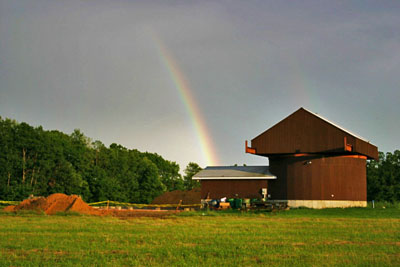

ORAS Observatory
The Oil Region Astronomical Society's mission is to inspire diverse learners of all ages through engagement in astronomy.
About the Observatory:
The Oil Region Astronomical Observatory was constructed over a three year period by members of the Oil Region Astronomical Society and local volunteers.The observatory is located in Venango County Pennsylvania within Two Mile Run County Park. The unique building houses an 14 inch Meade SCT, one of the largest telescope available for public use in Northwestern Pennsylvania. A small ready room is attached to the 20 foot diameter observatory. A specially designed rotating roof rolls open 10 feet to allow astronomical viewing by the telescope, as well as spectators.
{kind=link}

{kind=link}
{kind=link}
{kind=link}
{kind=link}
- 
- The ORAS Observatory with a rainbow overhead
A Brief History:
In March of 1991, a small group of people with a passion for looking to the stars came up with an idea to unite those people in Northwest Pennsylvania with a common interest in astronomy. Those efforts led to the formation of the Venango County Astronomy Club, the predecessor of the Oil Region Astronomical Society, a group of men, women and youths who share their equipment and knowledge of the stars in an effort to promote the fundamentals of astronomy and space science. The group continues to work together, turning their eyes to the sky to ponder and discuss the universe in which we live.
« Click the images to the left to see them bigger